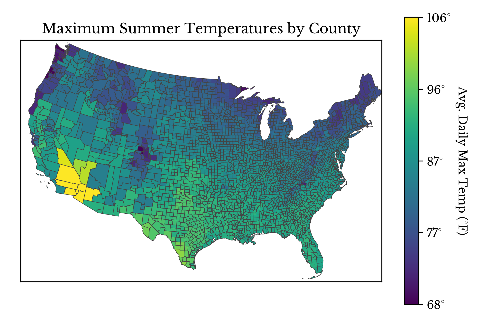
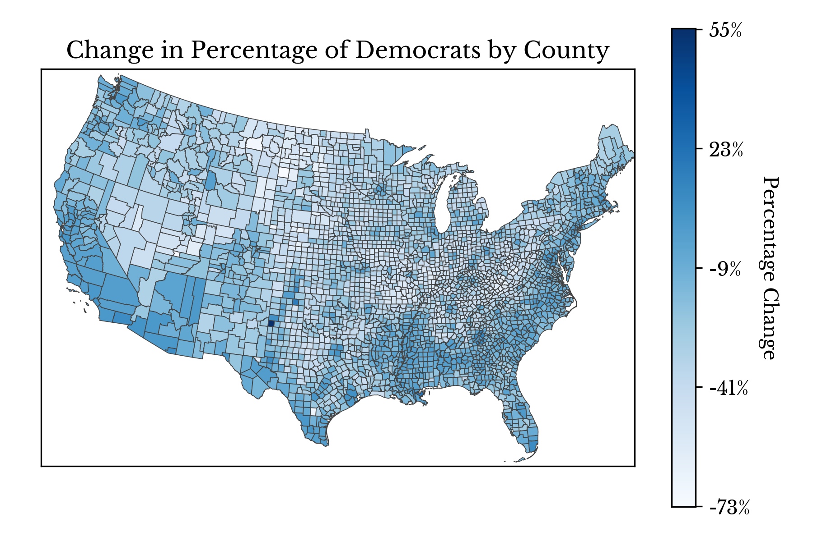
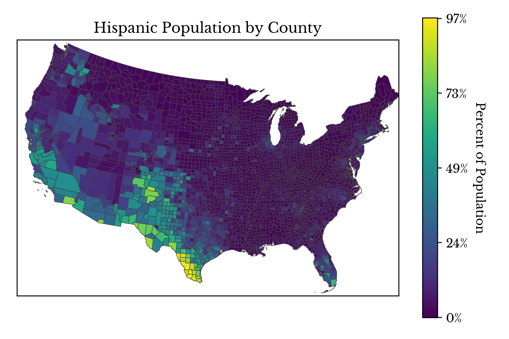

This post explores the composition of the United States using choropleth charts. The statistics and other values represented are as of the year 2016. Percentage changes in the number of democratic and republican voters are computed between the years 2008 and 2016.



Note: The data in the post is taken from this GitHub repository.